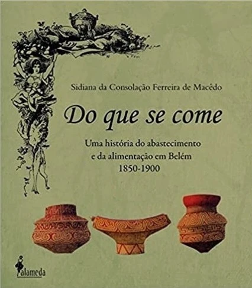
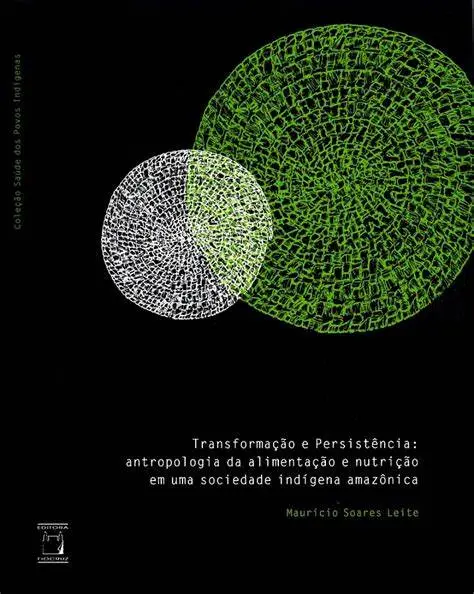
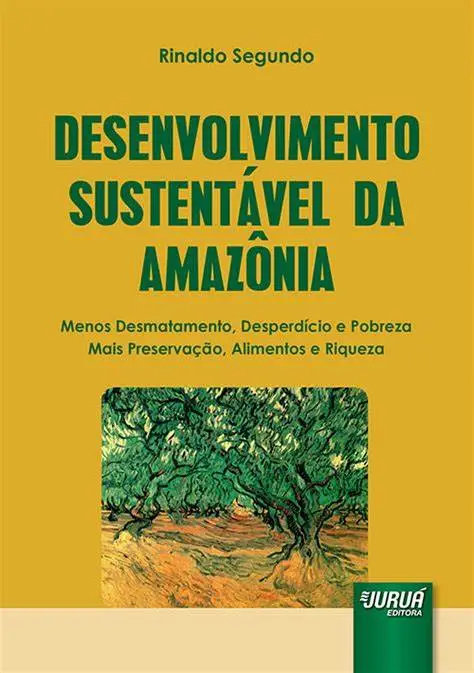
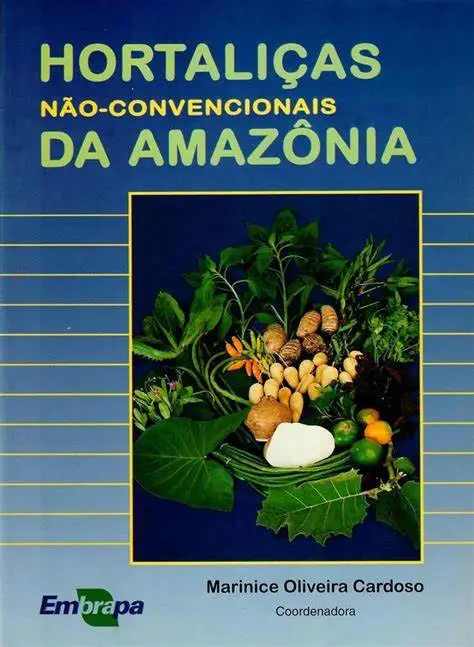
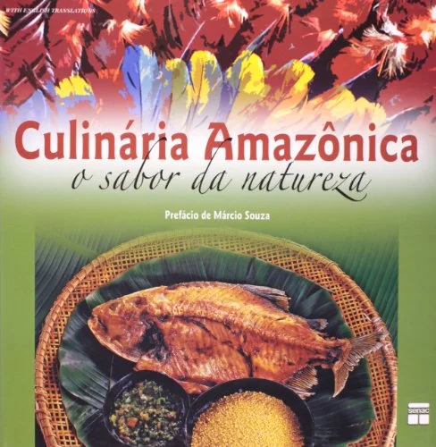

Livros
Descubra a Amazônia através das páginas de 10 Livros sobre a alimentação e cultura do Amazonas, onde cada história e receita são um convite irresistível para explorar os sabores e segredos dessa região única. Deixe-se envolver pela exuberância da natureza e das tradições que alimentam a mente e o coração, enquanto você se aventura nestas páginas repletas de conhecimento e sabor.
*clique em cada livro para exibir mais informações à respeito do mesmo*




